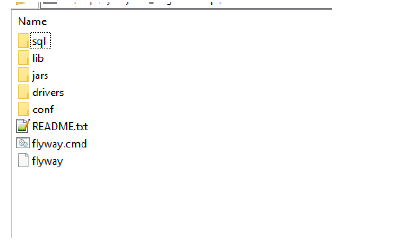

NEW - Flyway DB Migration and Versioning

Topic content
Flyway is a simple but powerful tool that helps you to maintain your Database properly. Main reasons for using flyway are:
•Database Schema versioning;
•Consistent Database migration;
•Easy maintenance of Database;
Flyway has a command line tool that provides commands such as:
•migrate
•clean
•info
•validate
•baseline
•repair
Flyway maintains one table - schema_version to achieve its tasks. This table will exist with other tables that come with Orchestra.
For more details please have a look at https://flywaydb.org
Important: Flyway is only usable for databases that are created from the scratch with Flyway. That means you cannot migrate existing databases that
are created with the SQL Scripts or other tools.
Orchestra Database Migration
Please have in mind that you need to create your user in DB manually. With flyway we do not want to maintain system scripts like in MySQL, MSSQL, Oracle or DB2, but rather deal only with Schema and, optionally, small set of data (like e.g. adding admin user).
For migrating and maintaining orchestra Database we have following options:
•Clean and migrate with flyway - this option is strongly recommended if you are installing Orchestra for the first time;
•Migrate with flyway - this option is used only in case you already used flyway for Orchestra DB (e.g. with version 4.6.0.0);
•Baseline and migrate with flyway - this option is recommended if you want to keep your old Orchestra Database, but want to make new migrations with flyway;
•No flyway - use old installation procedures from MySQL, MSSQL, Oracle or DB2.
Configuring flyway
Following steps are making your flyway ready for use:
•Edit configuration file conf/flyway.conf, where you have to set DB connection string, location of the scripts and optionally other parameters (more details: https://flywaydb.org/documentation/commandline/migrate)
•SQL Scripts that are by default located in sql directory. Location of the Scripts can be set in flyway.conf. This is sample flyway.conf:
flyway.url=jdbc:mysql://localhost:3306/orctrunk
flyway.user=ORCTRUNK
flyway.password=ORCTRUNK
flyway.locations=filesystem:sql/mysql
➢ flyway.url - URL of the DB to be used;
➢ flyway.user - User used to connect to DB;
➢ flyway.password - Password used to connect to DB;
➢ flyway.location - Relative paht of the location of SQL Scripts that will be used for migration
•JDBC driver - your JDBC driver goes to drivers directory.
Here you can see typical flyway directory with files and subdirectories:

Clean migrate
Clean migrate is done from command line tool:
flyway clean migrate
All SQL Scripts from configured location will be executed and table schema_version will be created.
Migrate
Migration is done from command line tool:
flyway migrate
All SQL Scripts that have version number bigger than the current version of your DB Schema (from table schema_version) will be executed.
Baseline and migrate
In this option you will first have to find your current version of Orchestra DB - that is the version of Orchestra you are using. When you find out which version that is (e.g. V4.5.5.0), please find matching version of SQL Script (for given example that would be V75__V4.5.5.0_upgrade.sql).
Next you will have to make a baseline for your DB Schema:
flyway baseline -baselineVersion=75 -baselineDescription="Base version up to orchestra V4.5.5.0"
This command will create table schema_version and set baseline version in it.
After setting baseline, migration is done also with:
flyway migrate
All SQL Scripts that have version number bigger than the baseline version of your DB Schema will be executed.